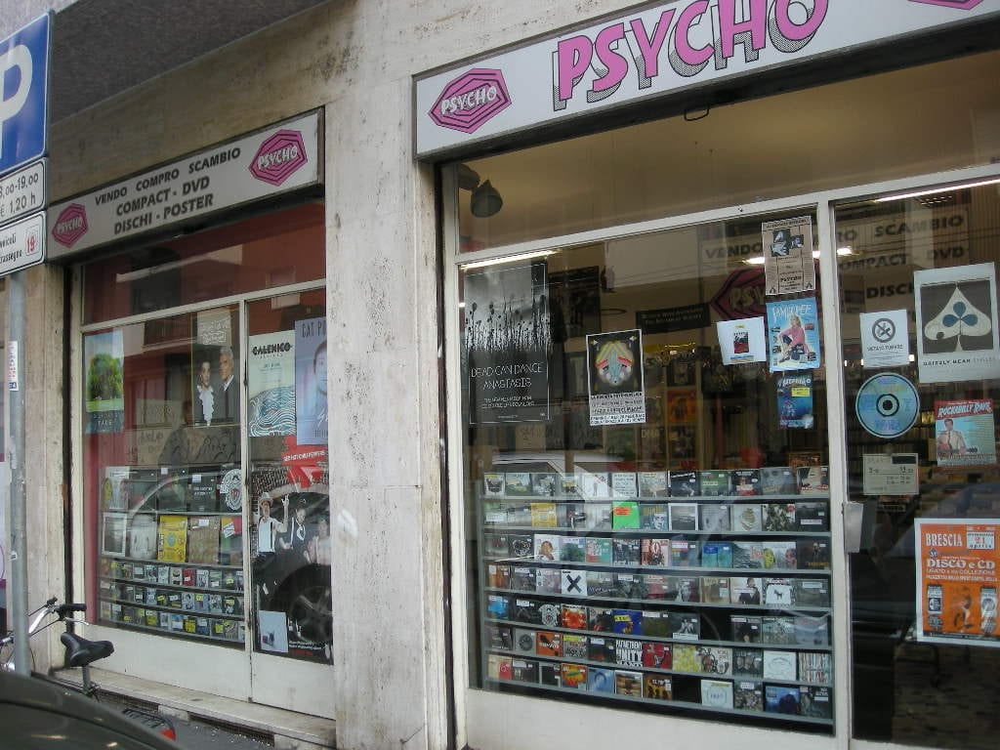
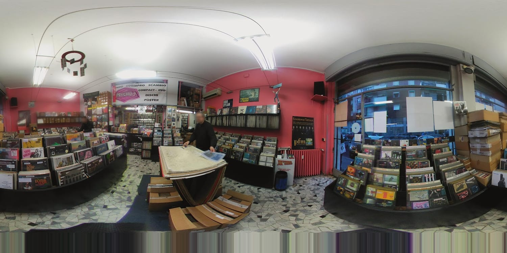
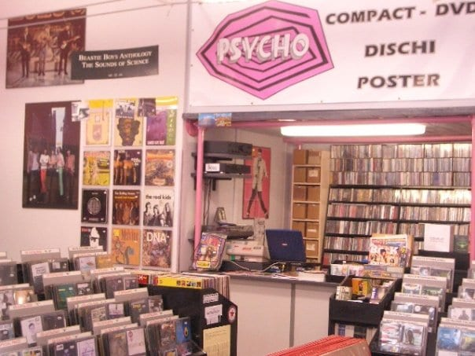
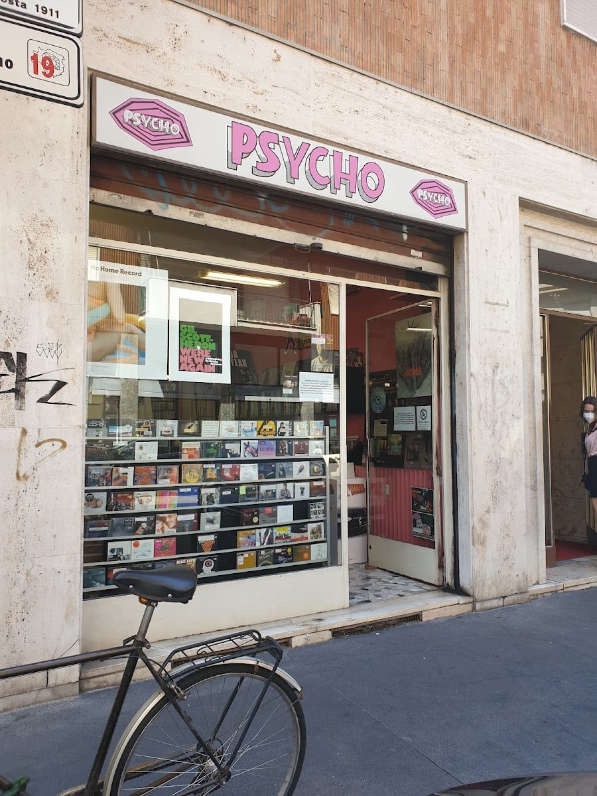

DISCHI
& VINILI
Uno degli ultimi baluardi della musica di qualità a Milano. Rock italiano e internazionale, i classici e le ultime uscite — con Fabio e Amos dietro il banco.

Aperto il 1° ottobre 1988
Psycho apre nel 1988, quando al futuro titolare viene proposto di rilevare il negozio di dischi in cui lavorava come commesso. Da allora, in via Zamenhof, è un punto di riferimento per chi cerca musica vera.
Oggi è una libreria musicale gestita da Fabio e Amos: competenti, cordiali, appassionati. Nuovo e usato, i classici e le ultime uscite rock, più poster e memorabilia da collezione.
«Il primo negozio che ho visitato a Milano, e fu subito amore.»

Ogni disco ha il suo cartellino
Da Psycho ogni disco è etichettato a mano: formato, pressing e anno, condizione del vinile e della copertina. Sai sempre cosa stai comprando — a un prezzo onesto.
— condizione del disco secondo lo standard Goldmine, dalla copertina al solco —
Cosa trovi da Psycho
Non troverai grandi occasioni-svendita: troverai il disco giusto, scelto.
Nuovo & usato
Grandi quantità di LP, 7" e CD, sia nuovi sia di seconda mano, per ogni tasca e ogni ricerca.
Rock & sottogeneri
Rock italiano e internazionale, punk, new wave, jazz-fusion, prog: i classici e tutte le ultime uscite.
Poster & memorabilia
Poster, stampe e memorabilia musicali cercati dai collezionisti — pezzi che raccontano una storia.
Eventi in negozio
Listening party, live-to-tape e il Record Store Day: da Psycho la musica si ascolta e si vive, non solo si compra.
Il negozio


Il mio negozio di dischi preferito a Milano. Grande scelta di usato e di nuovo, ogni disco etichettato con edizione e condizione. Prezzi buoni per Milano.
Esperienza favolosa: siamo entrati per respirare l'atmosfera di un negozio di dischi italiano e siamo usciti un'ora dopo con un Living Colour del Record Store Day e un original pressing di «Outrider» di Jimmy Page.
Il miglior negozio di dischi in cui sia mai stato: grande selezione e prezzi giusti. Ho amato soprattutto il jazz-fusion e il rock degli anni '70.
Scrivere una recensione per Psycho è una vera sfida: sono troppo di parte. È stato il primo negozio che ho visitato a Milano, e fu subito amore.
La mappa è di Google: aprendola, Google riceve il tuo indirizzo IP e può usare i suoi cookie.
Buono a sapersi
Dal 1° ottobre 1988, in via Zamenhof 2. È uno dei negozi di dischi storici di Milano, gestito da Fabio e Amos.
Sì: trattiamo nuovo e usato, e facciamo vendo–compro–scambio. Ogni disco è etichettato con condizione e pressing.
Soprattutto rock, italiano e internazionale, e i suoi sottogeneri: punk, new wave, jazz-fusion, prog. LP, 7" e CD, più poster e memorabilia.
Lunedì 15:00–19:30; da martedì a venerdì 09:00–19:30; sabato 09:30–19:30. Domenica chiuso.
Sì: oltre alla vendita organizziamo listening party, sessioni live-to-tape ed eventi come il Record Store Day. Passa a trovarci.